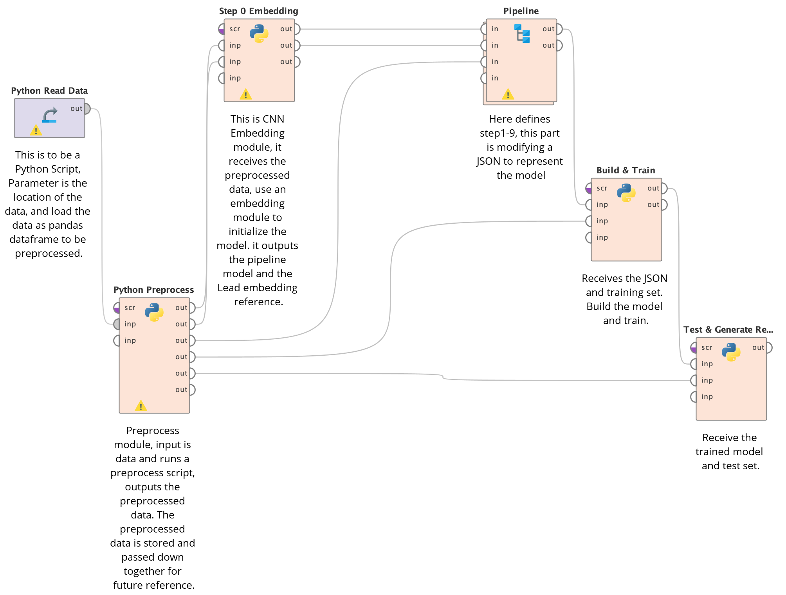
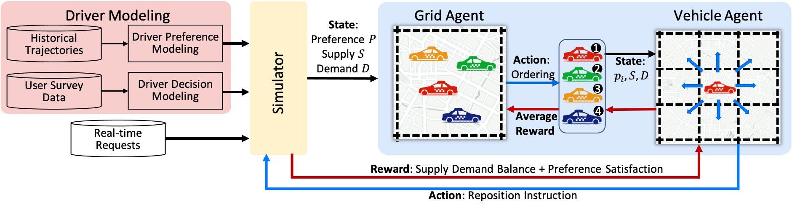
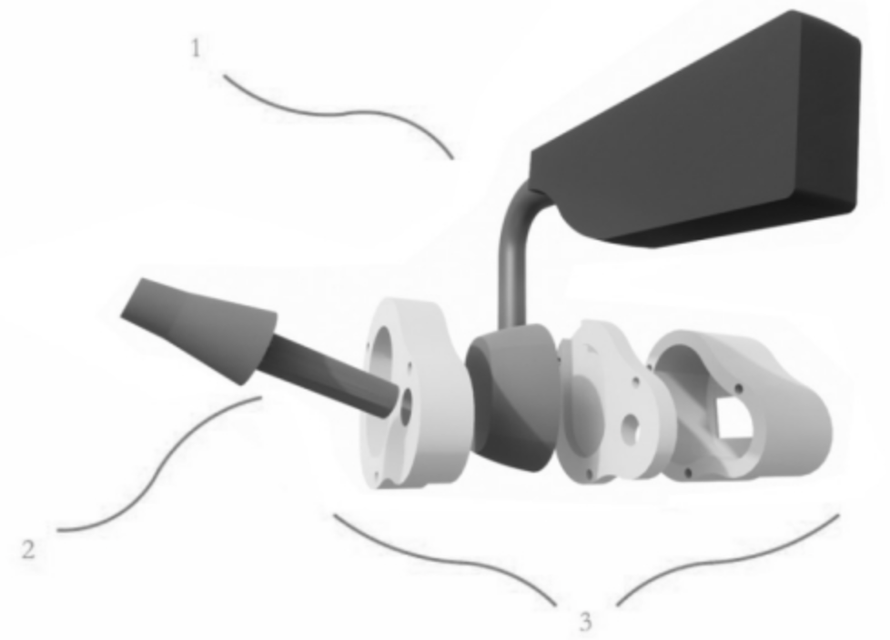

About
My research interest lies in Human-Computer Interaction (HCI), Human-Centered Computing, Social Computing, Human Behavior Modeling and cross-disciplines of transportation informatics and health informatics. My goal is to bridge the gap between technological expertise and user-friendly experience by leveraging advanced technologies and creating solutions aligned with user preferences. I am now working at Ubicomp Lab in National University of Singapore as an Research Assistant with Prof. Brian lim. Before joining NUS, I spent 2 years as a Research Assistant at COOLA Lab in Southeast University, where I worked with Prof. Yan LYU and Prof. Wanyuan Wang
Publication and Under-Review
- AAAI'24
-
i-Rebalance: Personalized Vehicle Repositioning for Supply Demand Balance (Under Review)
H Chen, P Sun, Q Song, W Wang, W Wu, W Zhang, G Gao, Y Lyu - AIAHPC'22
Research Projects
- Modularized Interpretable Medical Decision Support System with Visual Programming
-

Overview:
Current MDSS provides fixed guidlines to doctors while each doctor has a unique way of diagnose, e.g. thresholds of indexes, sequence of examinations. Existing medical prediction tools also offer poor interpretability which is confusing to doctors. This project focuses on enabling doctors to build diagnostic models with their individual preference. With our toolkit, doctors can use visual programming to customize a prediction model that is highly interpretable and precise in practice. (Ongoing)
- Personalized Vehicle Repositioning for Ride-hailing Platforms
-
Overview:
Traditional vehicle reposition technique used in ride-hailing context turns out to have little effect due to their ignorance on drivers' preference and response behaviors. This project first demonstrates that drivers' do have personalized cruising preference and carried out experiments to prove it necessary to consider drivers' preference when repositioning. Our on-field User Study of 106 professional drivers further stressed that drivers do have preference and their preference is a key factor in their decision making process of whether to accept a reposition or not. With a LSTM predictor on drivers' preference, a decision model on drivers and a dual-agent DRL framework, our solution can both satisfy driver preference and demand-supply gap. [GitHub Repo]
- Ear Motion Tracking System for VR Devices
-

Overview:
Virtual Reality is trending, while there are devices like Xbox Adaptive Controller to provide accessibility for the people in need, they are still hard to use in VR context because people cannot see through a VR Headset. When people have to click a button, they can hardly find it without seeing it. This project detects ear motion to use it as an input to the VR devices as a replacement of traditional controllers to provide accessibility to the people with special needs. Our User Study on 15 volunteers showed that this method is effective and easy to use. This device gives everyone the access to control a VR device, even if they are not good at moving their ears.
[GitHub Repo]

Haoyang Chen
Research Assistant
School of Computing
National University of Singapore